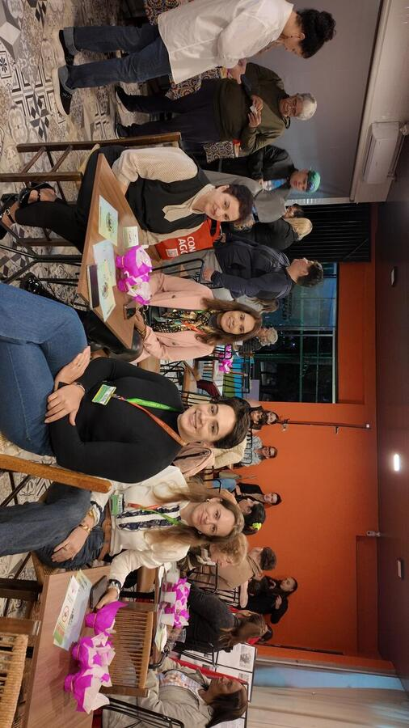
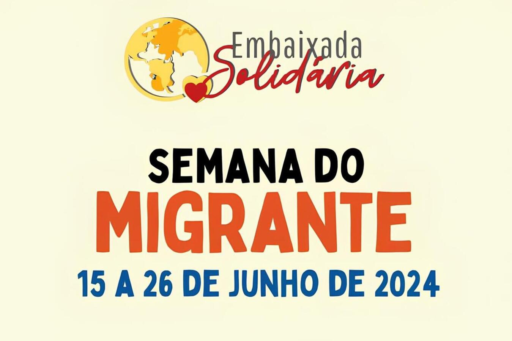
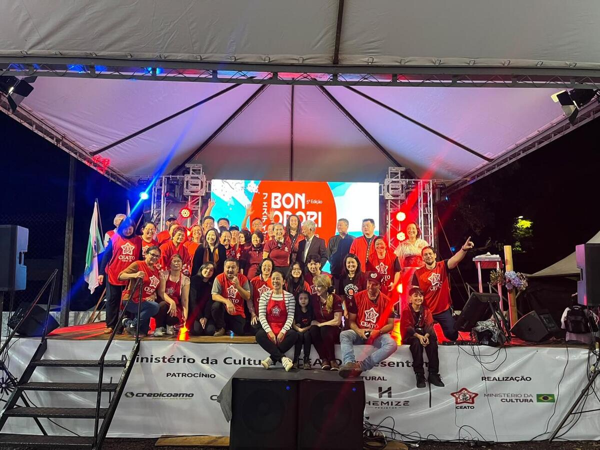

About Me

Hello! My name is Gabriel. I am a student with a strong interest in technology, mathematics, and different ways of learning and expressing myself. I enjoy understanding how things work, exploring new ideas, and turning what I learn into something I can apply in everyday life. I believe learning goes far beyond the classroom. Every experience, every person, and every challenge can teach us something new and contribute to our growth. That is why I try to remain open to new knowledge and different ways of seeing the world. This space is a way to share a little about my story, my roots, and the experiences that have shaped my journey so far. More than presenting who I am today, it also shows part of the path I have followed and how I have changed and learned over time, both personally and academically.
Birth

"I still remember the day Gabriel was born. Like any mother, I was eager to finally see his little face. When I held him in my arms for the first time, it was a feeling that is hard to explain. He was a calm baby, but always very attentive to what was happening around him. As he grew, that curiosity became even more evident. He liked to observe everything, constantly asked questions, and wanted to understand how things worked. From an early age, he showed an interest in learning and discovering new things—a trait that is still part of who he is today."His mother's account
School Journey
My educational journey began at the school in my neighborhood, where I took my first steps in reading and writing and also made some of my first friends. Throughout elementary and middle school, I discovered new interests and developed an increasingly strong affinity for mathematics and technology. Now, in high school, I try to make the most of every learning opportunity, aiming not only to prepare for my professional future but also to develop knowledge and values that will help me become a more aware person, ready to face life's challenges.
Historical Event
A historical event I consider very important to my generation is the Digital Revolution and the Popularization of the Internet. I grew up during a time when technology became an increasingly important part of everyday life, making it much easier to access information, learn about different cultures, and keep in touch with people in distant places. This transformation also influenced the way we learn, communicate, and see the world. Social media, for example, changed how we share ideas and experiences, while the internet made knowledge much more accessible. Being part of this change has influenced the way I learn and further sparked my interest in technology.
Current Stage
Currently, I strive to grow constantly as a person and as a student, cultivating virtues and taking greater responsibility for my own path. I understand that knowledge is a transformative tool, which is why I have dedicated myself to studying—especially mathematics, a subject in which I challenge myself to study advanced topics that I would otherwise encounter only in the coming years. My goal at this stage is to become more capable and prepared, continually working toward being a better version of myself.
Future Perspectives
Looking ahead, my goal is to pursue higher education in a course related to technology and programming, or in the exact sciences, such as a Mathematics Teaching degree. I want to build a career working with what truly motivates me: logic and problem-solving. To make these plans a reality, I intend to keep studying and working hard at IFPR, building a solid foundation for all the challenges to come.
Where I Live – Jardim Europa
Origins and Formation
Jardim Europa is part of Toledo's urban expansion, which took place mainly from the 1970s onward. Studies on the city's urban development identify the establishment of subdivisions in the Jardim Europa/América area during this period, accompanying the growth of Toledo's urban area.
Neighborhood Growth
As Toledo grew, Jardim Europa underwent a process of settlement and development, welcoming new residents and receiving urban infrastructure. Older municipal records already listed Jardim Europa/América among the major neighborhoods in Toledo's urban area.
Housing Development
The area's development was also connected to the municipality's housing policies. In 1986, a community housing initiative in Jardim Europa built 50 housing units, contributing to the expansion of residential areas in the neighborhood.
Carlos Gomes Street
One of the neighborhood's important roads is Carlos Gomes Street, which underwent redevelopment works. The project included improvements such as paving, a bike lane, lighting, accessible sidewalks, tree planting, bus stops, and other interventions to improve circulation and infrastructure in the area.
Community and Services
The Jardim Europa area also receives city government initiatives aimed directly at residents. In 2023, for example, the “Prefeitura nos Bairros” (City Hall in the Neighborhoods) program held its first edition in the area, providing services from different sectors to communities in Jardim Europa and the América, Bela Vista, and Santa Clara neighborhoods.
Jardim Europa Today
Today, Jardim Europa is part of an important urban area of Toledo. The neighborhood has major roads, such as Carlos Gomes Street and Maripá Avenue, as well as facilities and activities that serve local residents. City Hall continues to carry out infrastructure initiatives and hold events in the neighborhood.
Multiculturalism in Toledo
Mothers’ Luau

Organized by the Coordination of Policies for Immigrants and Vulnerable Groups (Department of Human and Social Development), in partnership with the Department of Women and Embaixada Solidária, the Mothers’ Luau brought together 60 women at Embaixada Solidária's headquarters to celebrate Mother's Day. With a four-year tradition, the gathering featured socializing, music, and cultural performances aimed at strengthening community and emotional bonds.
Connection to Multiculturalism:
The Mothers’ Luau puts multiculturalism into practice by creating a safe space of welcome and listening for Brazilian women (locals and migrants from other states) and immigrants from various countries. Recognizing that many of these mothers cross continents in search of a better future for their children, the initiative values cultural diversity as a source of unity and solidarity, promoting social inclusion, dignity, and the sharing of personal experiences.
Read the original article2nd Migrant Week

Organized by Embaixada Solidária with support from Toledo's Department of Culture and funding through the Paulo Gustavo Law, the 2nd Migrant Week offered a rich, free program featuring cooking workshops, artistic performances, exhibitions, academic discussions, and community activities. The festival placed special emphasis on traditional cuisine from countries such as Haiti, Angola, Venezuela, and Cuba, supporting the Cozinha Mundo (World Kitchen) project and encouraging crucial discussions about food security.
Connection to Multiculturalism:
Organized by Embaixada Solidária with support from Toledo's Department of Culture and funding through the Paulo Gustavo Law, the 2nd Migrant Week offered a rich, free program featuring cooking workshops, artistic performances, exhibitions, academic discussions, and community activities. The festival placed special emphasis on traditional cuisine from countries such as Haiti, Angola, Venezuela, and Cuba, supporting the Cozinha Mundo (World Kitchen) project and encouraging crucial discussions about food security.
Read the original articleBon Odori

Held at the Toledo Cultural and Sports Association (CEATO) and funded through the Culture Incentive Law, the 5th Bon Odori brought together more than 4,000 people over 12 hours of festivities. Making its debut on the Municipality's Official Events Calendar, the festival offered taiko (Japanese percussion), traditional dances, martial arts, origami workshops, and a Food Village featuring Asian dishes and themed fairs.
Connection to Multiculturalism:
Bon Odori highlights the preservation of memory and the spread of Eastern traditions in Paraná, promoting intercultural dialogue. By bringing together families from different backgrounds and regions to celebrate traditional rituals—such as honoring ancestors and the Wish Tree (Tanabata)—the event encourages empathy, mutual understanding, and recognition of Japanese heritage in the development of Toledo's diverse society.
Read the original article